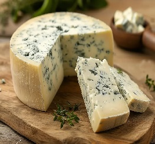
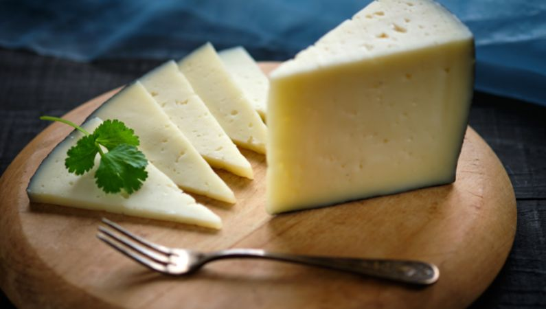
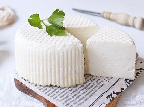

BIENVENIDO A LA SECCION DE ENCICLOPEDIA
¡Bienvenido a nuestra enciclopedia! En esta sección, te invitamos a explorar un mundo de conocimiento sobre quesos y sus variedades. Descubre la historia, el proceso de elaboración, y las características de cada tipo de queso, desde los clásicos hasta los más exóticos
NAVEGADOR DE LA WIKI

QUESO AZUL

QUESO BRIE

QUESO CURADO

QUESO FRESCO